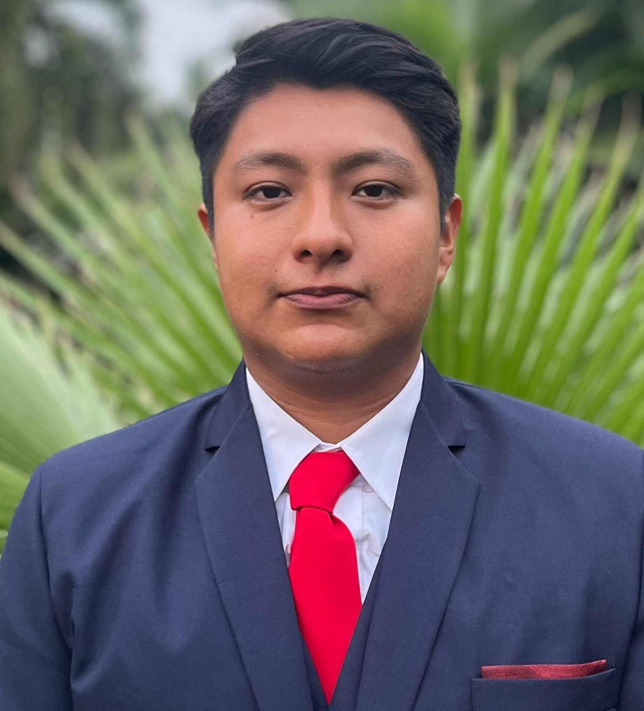
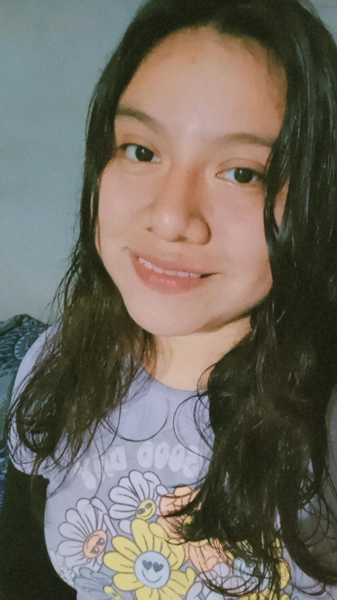
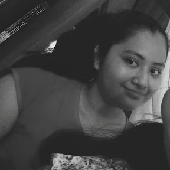

Acerca de Nosotros
Somos un equipo apasionado por crear experiencias web innovadoras, concisas y dinámicas. TwistSphere es nuestro proyecto para explorar la comunicación del futuro.
Nuestro Equipo de Trabajo
Monserrat Lopez Caballero
Desarrolladora Junior
Entusiasta por el desarrollo web y el mundo digital, le fasina aprender cosas nuevas
Luis Angel RJ
UI/UX Designer
Enfocado en crear interfaces intuitivas y estéticamente agradables. Amante del minimalismo.

Martin Osorio
Desarollador Front-end
Apasionado por CSS y las animaciones web. Siempre aprendiendo algo nuevo.

Yenielda Garcia
Programadora
Le gusta programar y le apasiona saber mas

Jennifer Martinez
Desarolladora de interfaces
Simepre cuida cada detalle de su trabajo, experta en interfaces de usuario